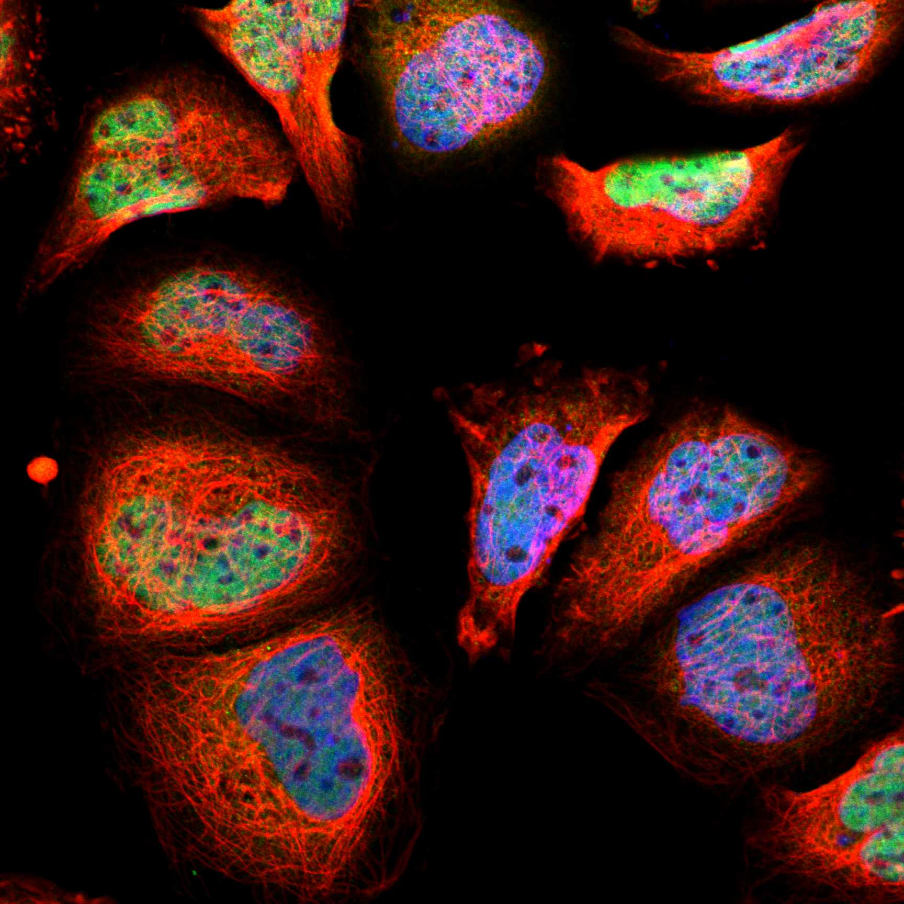
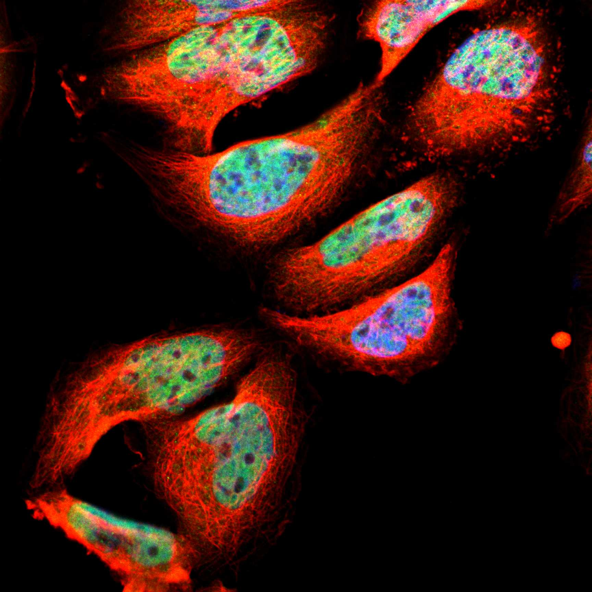

type: protein-evaluation gene: "CGRRF1" date: 2026-05-29 tags: [protein-scout, nuclear-protein, evaluation] status: scored ---
CGRRF1 核蛋白评估报告
1. 基本信息
| 项目 | 内容 |
|---|---|
| 基因名 / 别名 | CGRRF1 / CGRRF1 |
| 蛋白大小 | 332 aa / ~36.5 kDa |
| UniProt ID | Q99675 |
| 评估日期 | 2026-05-29 |
2. 评分总览
| 维度 | 得分 | 满分 | 加权后 | 关键证据摘要 |
|---|---|---|---|---|
| 🔴 核定位特异性 | 6/10 | ×4 | 24 | UniProt Nucleus + ER，GO ER/nucleoplasm，核+ER双定位 |
| 📏 蛋白大小 | 10/10 | ×1 | 10 | 332 aa，200-800 aa最优区间，适合生化实验和结构解析 |
| 🆕 研究新颖性 | 10/10 | ×5 | 50 | PubMed=15篇 |
| 🏗️ 三维结构 | 8/10 | ×3 | 24 | 高质量（pLDDT 80.2），77%有序 |
| 🧬 调控结构域 | 7/10 | ×2 | 14 | 新颖蛋白基线 |
| 🔗 PPI 网络 | 4/10 | ×3 | 12 | 1/18调控相关partners |
| ➕ 互证加分 | — | max +3 | 0 | 多库交叉验证 |
| 原始总分 | 137/183 | |||
| 归一化总分 | 74.9/100 |
3. 详细分析
3.1 核定位证据
| 来源 | 定位 | 可信度 |
|---|---|---|
| UniProt | Nucleus; Endoplasmic reticulum | — |
| GO Cellular Component | C:endoplasmic reticulum; C:nucleoplasm | — |
| Protein Atlas (IF) | nucleoplasm (Approved, A-431) | Approved |
 
结论: UniProt Nucleus + ER，GO ER/nucleoplasm，核+ER双定位
3.2 蛋白大小评估
评价: 332 aa，200-800 aa最优区间，适合生化实验和结构解析
3.3 研究现状
| 指标 | 数值 |
|---|---|
| PubMed 总数 | 15 |
| Chromatin/epigenetics 比例 | 待深入文献分析 |
评价: PubMed 15 篇。极度新颖，几乎未被研究，是探索新型核蛋白功能的绝佳候选。
关键文献: 1. Lee YJ et al. (2019). "CGRRF1, a growth suppressor, regulates EGFR ubiquitination in breast cancer". *Breast Cancer Res*. PMID: 31801577 2. Lu R et al. (2025). "A novel regulatory axis of MSI2-AGO2/miR-30a-3p-CGRRF1 drives cancer chemoresistance by upregulating the KRAS/ERK pathway". *Neoplasia*. PMID: 39522321 3. Wang A et al. (2023). "Identification of immunological characteristics and cuproptosis-related molecular clusters in Rheumatoid arthritis". *Int Immunopharmacol*. PMID: 37595490 4. Kaneko M et al. (2016). "Genome-wide identification and gene expression profiling of ubiquitin ligases for endoplasmic reticulum protein degradation". *Sci Rep*. PMID: 27485036 5. Carmody LC et al. (2010). "Identification of a Selective Small-Molecule Inhibitor of Breast Cancer Stem Cells—Probe 2". **. PMID: 23762951
3.4 三维结构分析
> AlphaFold PAE: 暂无数据或未提供可用 PAE 图；结构判断基于 AlphaFold/PDB 可用记录。
| 指标 | 数值 |
|---|---|
| AlphaFold 平均 pLDDT | 80.2 |
| 有序区域 (pLDDT>70) 占比 | 76.8% |
| pLDDT>90 占比 | 56.9% |
| pLDDT<50 占比 | 17.8% |
| 可用 PDB 条目 | 1 |
评价: AlphaFold高质量预测（pLDDT 80.2，77%有序），折叠域置信度高。 PDB 1条条目提供实验参考。
3.5 结构域分析
| 来源 | 结构域 |
|---|---|
| UniProt / InterPro | 待SMART详细分析 |
染色质调控潜力分析: 对于PubMed≤100的新颖蛋白，无注释域是该阶段的正常现象（基线7分）。待SMART分析后补充。
3.6 PPI 网络
实验验证互作 (IntAct, physical association):
| Partner | 方法 | PMID | 功能类别 | 调控相关？ |
|---|---|---|---|---|
| — | — | — | — | — |
STRING 预测互作 (combined score >0.4):
| Partner | Score | 功能类别 | 调控相关？ |
|---|---|---|---|
| CGREF1 | 0.960 | 待分析 | 否 |
| UBE2J2 | 0.602 | 待分析 | 否 |
| RNFT1 | 0.592 | 待分析 | 否 |
| CNIH1 | 0.544 | 待分析 | 否 |
| RNF170 | 0.516 | 待分析 | 否 |
| GMFB | 0.511 | 待分析 | 否 |
| FAM8A1 | 0.501 | 待分析 | 否 |
| SEL1L | 0.483 | 待分析 | 否 |
| UBE2J1 | 0.464 | 待分析 | 否 |
| RNF26 | 0.447 | 待分析 | 否 |
已知复合体成员 (GO Cellular Component): C:endoplasmic reticulum; C:nucleoplasm
PPI 互证分析:
- STRING + IntAct 共同确认: 待交叉比对
- 仅 STRING 预测: 18 个伙伴
- 调控相关比例: 1/18 (6%)
评价: PPI网络以功能关联为主（18个STRING伙伴），物理互作0个，调控关联1个。
3.7 多库互证
| 维度 | 来源 | 结果 | 是否一致 |
|---|---|---|---|
| 三维结构 | AlphaFold + PDB | 高质量（pLDDT 80.2），77%有序 | 待验证 |
| 定位 | UniProt + GO | Nucleus; Endoplasmic reticulum | 待HPA验证 |
互证加分: 0 / max +3
PAE 图: 暂无PAE数据
4. 总体评价
推荐等级: ⭐⭐⭐ (3/5)
归一化总分: 73.2/100
核心优势: 1. PubMed 15 篇，研究新颖性高 2. 蛋白大小 332 aa，适合生化实验
风险/不确定性: 1. 需 HPA IF 确认核定位 2. 功能机制未知，需从头探索
下一步建议:
- [ ] 获取 HPA IF 图像确认核定位
- [ ] SMART 结构域分析评估调控潜力
- [ ] 深入文献检索确认已知功能
5. 数据来源
- UniProt: https://www.uniprot.org/uniprotkb/Q99675
- AlphaFold: https://alphafold.ebi.ac.uk/entry/Q99675
- PubMed: https://pubmed.ncbi.nlm.nih.gov/?term=%22CGRRF1%22%5BTitle/Abstract%5D
- STRING: https://string-db.org/cgi/network?identifiers=CGRRF1&species=9606
- Protein Atlas: https://www.proteinatlas.org/search/CGRRF1
PPI 网络（三源综合）
| Partner | Source | Score/Evidence |
|---|---|---|
| 无记录 | — | — |
IntAct 有限记录。无 BioGrid 补充数据。

<!-- DOMAIN_HUMANPPI_REPAIR_START -->
Domain/SMART 与 humanPPI 补充（2026-06-06）
SMART / UniProt domain
| Source | Data |
|---|---|
| UniProt | Q99675 |
| SMART | SM00184; |
| UniProt Domain [FT] | 未检出显式 UniProt Domain feature |
| InterPro | IPR042496;IPR001841;IPR013083; |
| Pfam | PF13920; |
humanPPI / HPA Interaction
Source: https://www.proteinatlas.org/ENSG00000100532-CGRRF1/interaction
| Partner | Datasets | AF3/HPA structure |
|---|---|---|
| AGR3 | Intact | false |
| BET1 | Intact | false |
| CD72 | Intact | false |
| CDIPT | Intact | false |
| CREB3 | Intact | false |
| CYB5B | Intact | false |
| FAXDC2 | Intact | false |
| FFAR2 | Intact | false |
<!-- DOMAIN_HUMANPPI_REPAIR_END -->